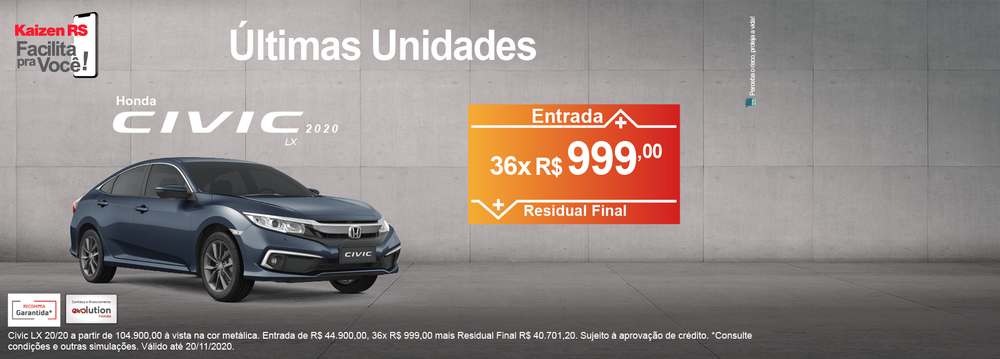
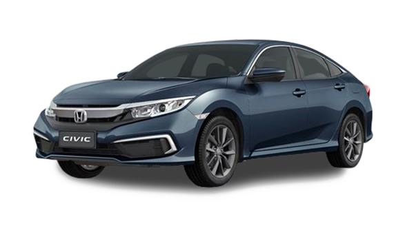
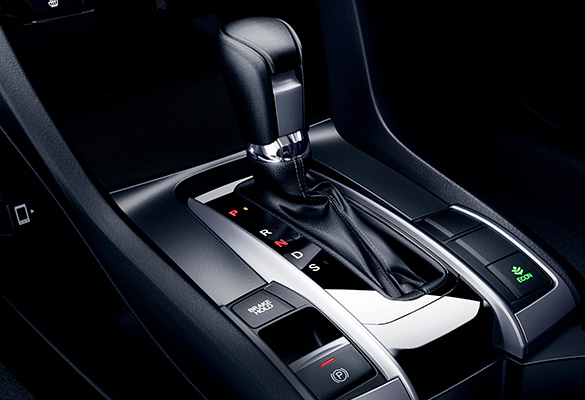
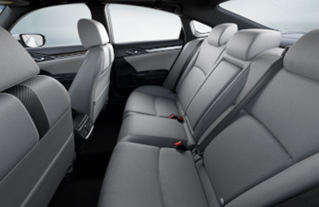
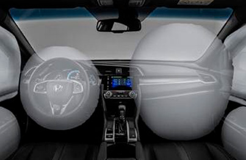

Conforto e espaço interno
O Civic Geração 10 foi desenvolvido para garantir a melhor dirigibilidade com o máximo conforto , atribuído por seu design interno e diferenciada ergonomia.


Câmbio CVT com Paddle Shift
O câmbio com transmissão CVT de 7 velocidades com Paddle Shift (aletas) proporciona conforto ao trocar de marchas.

Espaço Interno
O espaço interno é o grande diferencial do Civic, que trás muito conforto e ergonomia para todos os ocupantes!

Airbags
Airbags frontais e de cortina com o simples intuito de trazer o máximo de segurança para todos